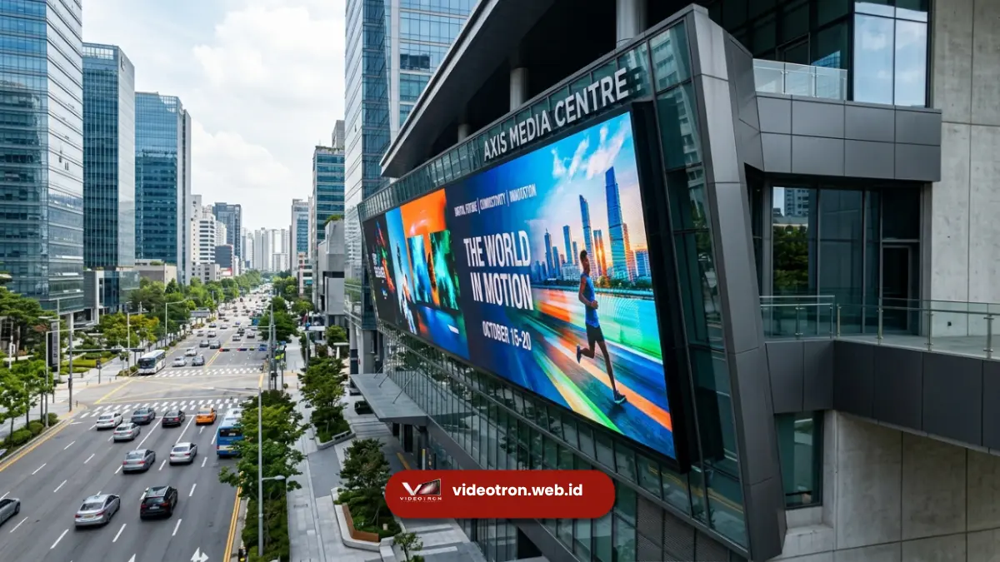

Viewing angle videotron adalah rentang sudut di mana gambar pada layar LED masih terlihat jelas tanpa penurunan warna atau kecerahan yang signifikan.
Semakin lebar viewing angle, semakin banyak penonton dari berbagai posisi bisa menikmati tampilan optimal.
Poin Penting:
- Viewing angle terdiri dari sudut horizontal dan sudut vertikal
- Videotron kualitas baik umumnya memiliki viewing angle horizontal 140-160 derajat
- Sudut vertikal biasanya lebih sempit dibanding sudut horizontal
- Jenis LED, jarak pixel pitch, dan lapisan pelindung memengaruhi lebar viewing angle
- Viewing angle menentukan tata letak audiens saat perencanaan acara
- 1. Apa Itu Viewing Angle pada Videotron?
- 2. Berapa Sudut Pandang Ideal untuk Videotron Outdoor dan Indoor?
- 3. Faktor Apa Saja yang Memengaruhi Viewing Angle Videotron?
- 4. Mengapa Viewing Angle Penting Saat Merencanakan Tata Letak Acara?
- 5. Kesalahan Umum Terkait Viewing Angle yang Perlu Dihindari
- 6. Kesimpulan serta Rekomendasi
Apa Itu Viewing Angle pada Videotron?
Viewing angle adalah sudut maksimal di mana kecerahan layar videotron masih dianggap layak dilihat, biasanya diukur pada titik ketika kecerahan menurun hingga separuh dari nilai saat dilihat tegak lurus.
Nilai ini dinyatakan dalam derajat, baik untuk arah horizontal (kiri-kanan) maupun vertikal (atas-bawah).
Setiap chip LED memancarkan cahaya dengan pola distribusi tertentu. Ketika penonton bergeser ke samping atau ke bawah dari posisi tegak lurus layar, intensitas cahaya yang diterima mata akan berkurang secara bertahap. Titik di mana penurunan ini mulai terasa signifikan itulah yang disebut batas viewing angle.
Pada spesifikasi teknis videotron, viewing angle umumnya ditulis dalam format seperti "160/140 derajat", yang berarti 160 derajat untuk horizontal dan 140 derajat untuk vertikal.
Semakin besar angka ini, semakin luas cakupan area di mana audiens masih mendapatkan kualitas gambar yang baik.
Berapa Sudut Pandang Ideal untuk Videotron Outdoor dan Indoor?
Sudut pandang ideal videotron umumnya berada di kisaran 140-160 derajat horizontal dan 100-140 derajat vertikal, tergantung jenis LED dan lokasi pemasangan. Kebutuhan viewing angle berbeda antara pemasangan outdoor dan indoor.
Videotron outdoor umumnya membutuhkan viewing angle horizontal yang lebih lebar karena penonton tersebar di area terbuka dengan jarak dan posisi yang beragam, seperti pada konser, pameran, atau acara olahraga. Layar dengan sudut pandang sempit membuat penonton di sisi tepi kesulitan melihat gambar dengan jelas.
Videotron indoor, seperti untuk backdrop panggung, ballroom, atau ruang rapat, biasanya memiliki jarak pandang lebih dekat dan audiens yang cenderung menghadap layar secara langsung. Namun viewing angle tetap penting agar tamu yang duduk di sisi kanan atau kiri ruangan tidak kehilangan detail warna dan kecerahan.
Faktor Apa Saja yang Memengaruhi Viewing Angle Videotron?
Viewing angle videotron dipengaruhi oleh jenis chip LED, kualitas lensa pelindung, pixel pitch, dan teknologi panel yang digunakan. Berikut faktor utamanya:
- Jenis dan Kualitas Chip LED: Chip LED SMD (Surface Mounted Device) umumnya menghasilkan viewing angle lebih lebar dibanding chip DIP generasi lama, karena elemen cahayanya tersebar merata pada permukaan chip. Menurut data industri LED display yang umum digunakan sebagai acuan teknis pada periode 2023-2024, chip SMD modern mampu mencapai viewing angle horizontal di atas 160 derajat.
- Lapisan Pelindung dan Lensa Difusi: Lapisan lensa pada permukaan LED berfungsi menyebarkan cahaya secara lebih merata. Videotron dengan lensa difusi berkualitas cenderung memiliki transisi kecerahan yang lebih halus saat dilihat dari sudut ekstrem, sehingga mengurangi efek "gelap tiba-tiba" di tepi sudut pandang.
- Pixel Pitch: Pixel pitch yang lebih rapat umumnya berkorelasi dengan kualitas panel yang lebih presisi, namun pixel pitch sendiri bukan penentu utama viewing angle. Faktor ini lebih berkaitan dengan resolusi dan jarak pandang minimum, sementara viewing angle lebih ditentukan oleh desain optik chip LED.
- Kondisi Lingkungan: Cahaya matahari langsung atau pantulan cahaya pada siang hari dapat memengaruhi persepsi viewing angle secara visual, meskipun tidak mengubah spesifikasi teknis layar itu sendiri.

Mengapa Viewing Angle Penting Saat Merencanakan Tata Letak Acara?
Viewing angle menentukan seberapa luas area yang bisa mendapatkan pengalaman visual optimal, sehingga langsung memengaruhi perencanaan posisi panggung, kursi tamu, dan sudut pemasangan layar. Perencanaan yang tepat mencegah keluhan tamu yang duduk di sisi samping.
Pada acara dengan audiens besar seperti konser atau pameran, tim produksi umumnya mempertimbangkan sudut kemiringan pemasangan videotron agar area dengan sudut pandang ekstrem tetap mendapat kecerahan memadai. Beberapa instalasi bahkan menggunakan kombinasi beberapa layar dengan orientasi berbeda untuk menutupi seluruh area audiens.
Untuk ruang indoor seperti ballroom hotel, mempertimbangkan viewing angle membantu menentukan apakah layar perlu dipasang lebih tinggi, dimiringkan, atau ditambah dengan layar pendamping di sisi lain ruangan agar seluruh tamu mendapat pengalaman visual yang setara.
Kesalahan Umum Terkait Viewing Angle yang Perlu Dihindari
Kesalahan paling umum adalah mengabaikan spesifikasi viewing angle saat memilih videotron untuk venue dengan audiens tersebar luas, sehingga sebagian penonton mendapat gambar redup atau kurang jelas.
Kesalahan lain termasuk memasang videotron pada posisi terlalu rendah tanpa kemiringan yang sesuai. Sehingga sudut pandang vertikal tidak optimal bagi penonton yang berdiri jauh dari layar.
Selain itu, banyak penyewa acara tidak menanyakan spesifikasi viewing angle secara spesifik kepada vendor, padahal informasi ini penting untuk memastikan kesesuaian dengan tata letak venue.
Kesimpulan serta Rekomendasi
Viewing angle videotron adalah faktor teknis yang menentukan kualitas visual dari berbagai posisi penonton, dengan rentang ideal umumnya 140-160 derajat horizontal tergantung jenis LED dan lokasi pemasangan.
Memahami faktor ini membantu perencanaan tata letak acara yang lebih baik dan memastikan seluruh audiens mendapat pengalaman visual yang setara.
Sebelum menyewa atau membeli videotron, pastikan Anda menanyakan spesifikasi viewing angle secara detail kepada vendor sesuai kebutuhan venue dan jumlah audiens Anda.
Hubungi tim kami untuk konsultasi spesifikasi videotron yang sesuai dengan tata letak acara Anda.

Hawa Nadira
LED Technology Consultant dan Visual Educator
Konsultan dan spesialis solusi display digital berdedikasi tinggi yang fokus membagikan panduan edukatif mengenai penerapan teknologi layar LED videotron untuk kebutuhan interior modern di Indonesia.